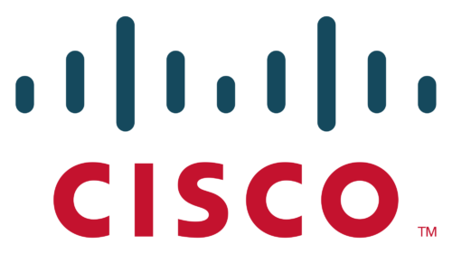
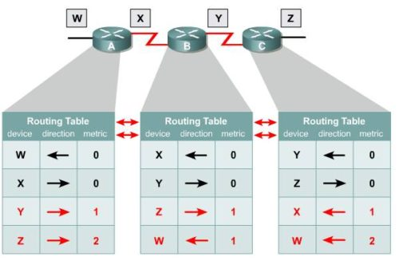

07.07.2017 11:38
Настройка ACL в Cisco
ACL (Access Control List) — это список управления доступом. Списки
доступа позволяют сетевым инженерам идентифицировать пакеты различных
типов. Для этого в конфигурации ACL перечисляют значения, которые
маршрутизатор Cisco может найти в заголовках IP, TCP, UDP и др.
Например, список доступа может распознать пакет с IP-адресом отправителя
1.1.1.1, или пакеты IP-адрес получателя которых находится в подсети
10.1.1.0/24, или пакеты с портом получателя TCP 23 (Telnet). Чаще всего
списки доступа применяют как фильтр пакетов.
Читать далее

03.07.2017 03:55
Настройка статических маршрутов в Cisco
Сегодня начинается серия статей про настройку маршрутизации
на оборудовании Cisco. Ранее на моем сайте уже рассматривалось
понятие маршрутизации в общем виде (без привязки к конкретному
оборудованию). Если вы не понимаете смысл таких слов как «метрика»,
«таблица маршрутизации», «протоколы динамический маршрутизации», то
настоятельно советую почитать вводную статью.
Читать далее
27.06.2017 22:59
Настройка VLAN на оборудовании Cisco
На решение коммутатора о перенаправлении фреймов оказывают влияние
многие факторы, но наибольшее влияние оказывают так называемые
виртуальные локальные сети VLAN. VLAN (Virtual Local Area Network) —
логическая (виртуальная) локальная сеть, которая представляет из себя
группу хостов, взаимодействующих так, если бы они были подключены к
одному широковещательному домену. Взаимодействие обеспечивается
независимо от физического местонахождения хостов.
Читать далее
24.06.2017 03:11
Что такое маршрутизация
Маршрутизация – это процесс определения пути следования информации
в сетях связи. Маршрутизация служит для приема пакета от одного
устройства и передаче его другому устройству через другие сети.
Маршрутизатором или шлюзом называется узел сети с несколькими
интерфейсами, каждый из которых имеет свой MAC-адрес и IP адрес.
Читать далее

17.06.2017 22:36
Обзор технологии WiMAX
Достаточно популярным решением для организации широкополосного
доступа для множества абонентов на сегодняшний день является технология
WiMAX. Данная технология предоставляет беспроводный доступ на больших
расстояниях для широкого спектра устройств.
Читать далее
20:16
Обзор технологии Wi-Fi
Wi-Fi — это технология, которая позволяет различным устройствам,
прежде всего компьютерам, взаимодействовать по радиоканалу, без
использования проводов. Это дает важное преимущество, так как сеть
становится мобильной и для подключения к ней необходима лишь
беспроводная точка доступа и наличие сетевой карты Wi-Fi на стороне
компьютера. Практически все современные ноутбуки и смартфоны имеют
возможность подключения по Wi-Fi.
Читать далее
15.06.2017 10:58
Обзор технологии DWDM
Оптическое волокно обладает огромной пропускной способностью. Еще
лет двадцать назад людям казалось, что им вряд ли потребуется и сотая ее
часть. Однако время идет и потребности в передаче больших объемов
информации растут все быстрее. Такие технологии как ATM, IP, SDH
(STM-16/64) уже в ближайшей перспективе могут не справится с «взрывным»
ростом передаваемой информации. На смену им пришла технология DWDM.
Читать далее
Оставить комментарий / Просмотров: 338 views /
Оптика